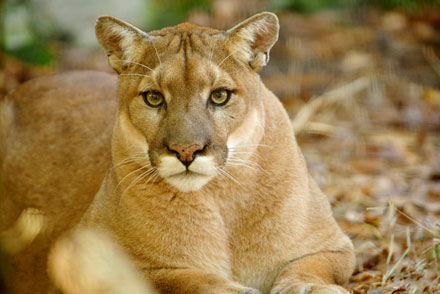
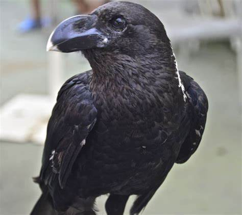
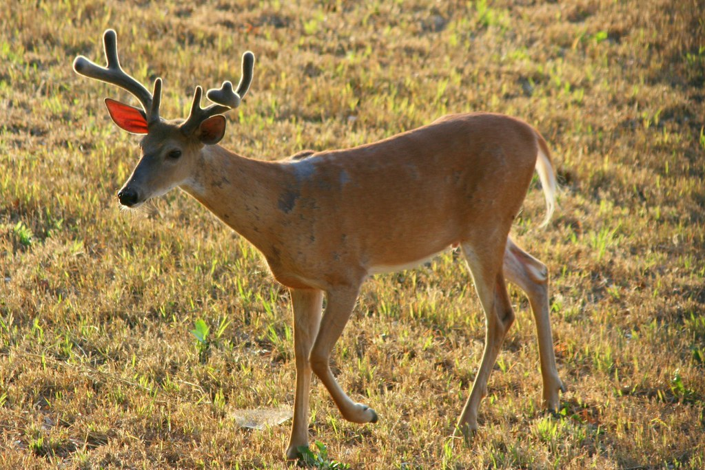
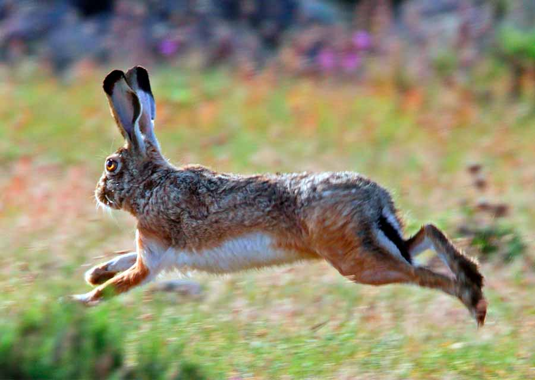
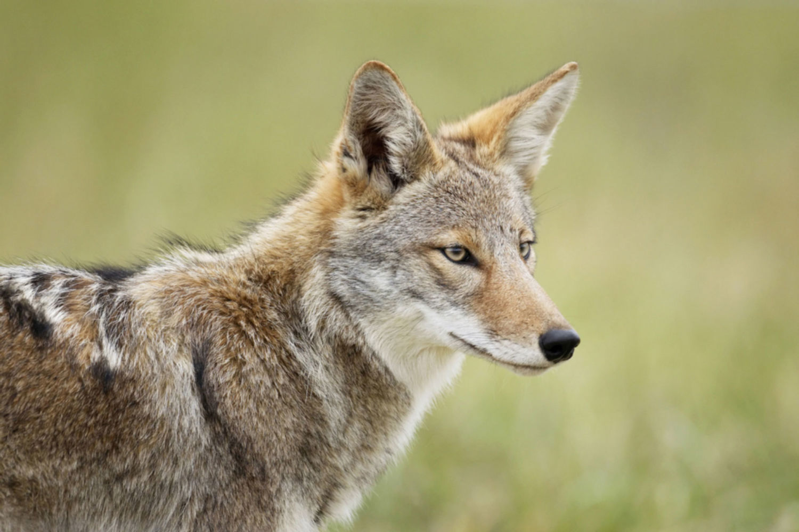

Fauna en Madera, Chihuahua
Puma (Puma concolor)

El Puma es un felino nativo de Madera, Chihuahua. Es conocido por su elegancia y habilidades de caza.
Características:
- Tamaño promedio: 1.5-2 metros de longitud.
- Peso: 50-90 kg.
- Alimentación: Carnívoro, se alimenta de ciervos, liebres y otros animales.
- Hábitat: Zonas montañosas y bosques.
Cuervo de Chihuahua (Corvus cryptoleucus)

El Cuervo de Chihuahua es un ave endémica de la región de Madera, Chihuahua. Es conocido por su inteligencia y su llamativo plumaje negro.
Características:
- Tamaño promedio: 45-55 cm de longitud.
- Peso: 300-500 gramos.
- Alimentación: Omnívoro, se alimenta de frutas, semillas, carroña e insectos.
- Hábitat: Zonas semidesérticas y bosques.
Ciervo de Cola Blanca (Odocoileus virginianus)

El Ciervo de Cola Blanca es un mamífero ungulado que se encuentra en Madera, Chihuahua. Es conocido por su elegante apariencia y sus astas ramificadas.
Características:
- Tamaño promedio: Machos: 1.5-2 metros de longitud, hembras: 1.2-1.5 metros de longitud.
- Peso: Machos: 80-150 kg, hembras: 40-90 kg.
- Alimentación: Herbívoro, se alimenta de hojas, brotes y frutos.
- Hábitat: Bosques y praderas.
Liebre (Lepus spp.)

Las Liebres son mamíferos de tamaño mediano que se encuentran en Madera, Chihuahua. Son conocidas por su velocidad y su capacidad para escapar de los depredadores.
Características:
- Tamaño promedio: Varía según la especie.
- Peso: Varía según la especie.
- Alimentación: Herbívoro, se alimenta de hierbas, hojas y cortezas de árboles.
- Hábitat: Zonas abiertas, praderas y matorrales.
Coyote (Canis latrans)

El Coyote es un mamífero carnívoro que se encuentra en Madera, Chihuahua. Es conocido por su adaptabilidad y su distintivo aullido nocturno.
Características:
- Tamaño promedio: 1-1.3 metros de longitud.
- Peso: 7-21 kg.
- Alimentación: Carnívoro, se alimenta de pequeños mamíferos, aves, reptiles y carroña.
- Hábitat: Diversos hábitats, incluyendo praderas, desiertos y bosques.